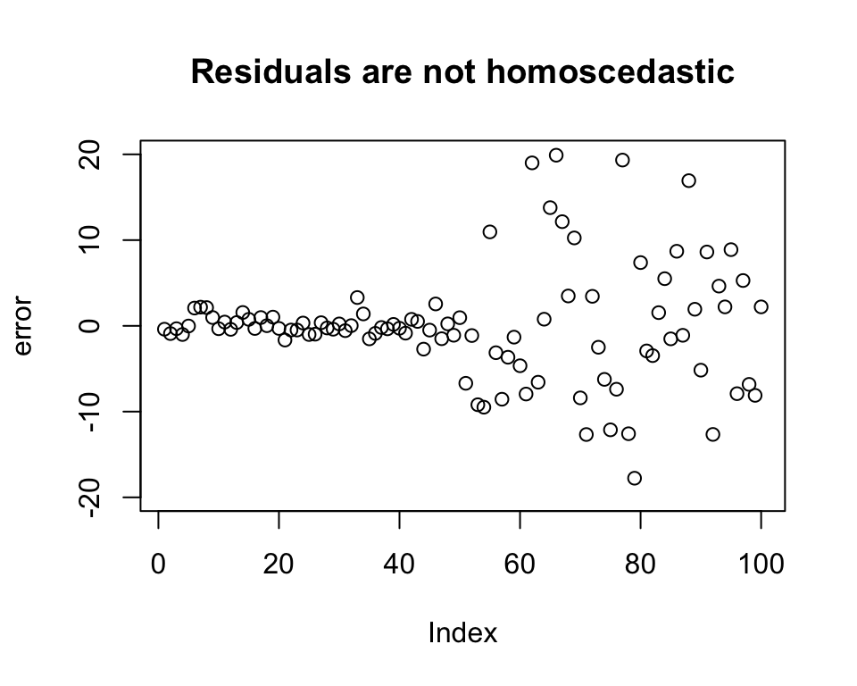

linear_regression <- function(data, ..., y) {
x_parameters <- c(...)
n <- nrow(data)
# defining the predictor matrix
X <-
matrix(c(rep(1, n), x_parameters),
nrow = n,
ncol = ncol(data)
)
# defining the outcome matrix
Y <- matrix(y, nrow = n, ncol = 1)
# solving for the beta coefficients
beta <- solve(t(X) %*% X) %*% t(X) %*% Y
# creating a vector 'estimate' for the beta coefficients
estimate <- c()
for (i in 1:ncol(X)) {
estimate[i] <- beta[i]
}
# bootstrapping to estimate the standard errors
num_bootstraps <- 10000
bootstrap_betas <-
matrix(0, nrow = num_bootstraps, ncol = ncol(data))
for (i in 1:num_bootstraps) {
sample_indices <- sample(nrow(data), replace = TRUE)
bootstrap_data <- data[sample_indices, ]
bootstrap_X <-
as.matrix(cbind(1, bootstrap_data[, 1:(ncol(bootstrap_data) - 1)]))
bootstrap_Y <- as.matrix(bootstrap_data$y, ncol = 1)
bootstrap_beta <-
solve(t(bootstrap_X) %*% bootstrap_X) %*% t(bootstrap_X) %*% bootstrap_Y
bootstrap_betas[i, ] <- bootstrap_beta
}
# finding the standard deviation of the bootstrapped betas to find the
# standard error of the coefficients
se <- c()
for (i in 1:ncol(X)) {
se[i] <- apply(bootstrap_betas, 2, sd)[i]
}
# calculating the t-statistic
t <- estimate / se
# defining the degrees of freedom
df <- nrow(X) - ncol(X)
# calculating the p-value
p <- 2 * pt(t, df, lower = F)
# calculating the residuals
resid <- Y - X %*% beta
residual <- sqrt(mean((resid)^2))
# defining the row names of the output data frame
rownames <- c()
for (i in 1:((ncol(X)) - 1)) {
rownames[i] <- i
}
test <- list(
plot(resid, main = "Residual Plot to test homoscedasticity of errors", ylim = c(-10, 10)),
qqnorm(resid, main = "Q-Q plot to test normality of errors"),
pairs(data, main = "Assessing Linearity of\n Predictors with Outcome")
)
impl <- data.frame(
Estimate = estimate,
Std.Error = se,
t.value = t,
p.value = p,
Residual = c(residual, rep(NA, ncol(X) - 1)),
DegOfFreedom = c(df, rep(NA, ncol(X) - 1)),
row.names = c("(Intercept)", paste0(rep("x", ncol(
X
) - 1), rownames))
)
# returning a data frame akin to the lm output
return(list(test, impl))
}Linear
Introduction
Linear Regression is one of the simplest regressions out there. In predicting an outcome from various covariate(s), it creates the ‘best-fitting’ line to the data that we observe to create a model - in that it predicts values on the line when given specific values of the covariates.
Uses
Linear Regression is used across various fields. It is a model which has high bias and low variance. This means that even though it may not fit the data observed in the most optimal way (in that it may not be able to capture complexities in the data), it is not that sensitive to changes in the training data, which can make it more stable when dealing with small fluctuations or noise in the data set. Linear Regression can be used for predicting continuous, categorical, and even binary outcomes (as is often done in Causal Inference).
Assumptions
- The predictors and the outcome are linearly related to one another
- The errors are normally distributed and are independent of one another
- The errors are homoscedastic
Our Linear Regression Implementation
Our Linear Regression implementation: (Note that we use bootstrapping to estimate standard errors)
Creating a test data set which meets all Linear Regression assumptions to check if our function works.
test_linear_regression_data <-
data.frame(
x1 = rnorm(100, mean = 5, sd = 2),
x2 = rnorm(100, mean = 0, sd = 2)
)
error <- rnorm(100, mean = 0, sd = 1) # errors are homoscedastic
test_linear_regression_data$y <-
2 * test_linear_regression_data$x1 +
0.2 * test_linear_regression_data$x2 + error
plot(test_linear_regression_data$x1, test_linear_regression_data$y,
xlab = "x1", ylab = "y",
main = "Outcome is linear to x1"
)plot(test_linear_regression_data$x2, test_linear_regression_data$y,
xlab = "x2", ylab = "y",
main = "Outcome is linear to x2 (it is not apparent in this plot but our data structure captures this relationship)", cex.main = 0.6
)plot(density(error), main = "Errors are normally distributed with mean 0")plot(error,
ylab = "residuals", main = "Residuals are homoscedastic", ylim = c(-3, 3)
)Testing Assumptions for Linear Regression
our_implementation <- linear_regression(
test_linear_regression_data,
test_linear_regression_data$x1,
test_linear_regression_data$x2,
y = test_linear_regression_data$y
)[[2]]our_implementation Estimate Std.Error t.value p.value Residual DegOfFreedom
(Intercept) 0.4679943 0.31344739 1.493055 1.386684e-01 0.9369198 97
x1 1.9334142 0.05792076 33.380331 5.582525e-55 NA NA
x2 0.2119056 0.05038448 4.205772 5.802633e-05 NA NAComparing our output to R’s output.
r_implementation <-
summary(lm(y ~ x1 + x2, data = test_linear_regression_data))
r_implementation
Call:
lm(formula = y ~ x1 + x2, data = test_linear_regression_data)
Residuals:
Min 1Q Median 3Q Max
-1.8730 -0.6607 -0.1245 0.6214 2.0798
Coefficients:
Estimate Std. Error t value Pr(>|t|)
(Intercept) 0.46799 0.28753 1.628 0.107
x1 1.93341 0.05243 36.873 < 2e-16 ***
x2 0.21191 0.04950 4.281 4.37e-05 ***
---
Signif. codes: 0 '***' 0.001 '**' 0.01 '*' 0.05 '.' 0.1 ' ' 1
Residual standard error: 0.9513 on 97 degrees of freedom
Multiple R-squared: 0.9337, Adjusted R-squared: 0.9323
F-statistic: 682.8 on 2 and 97 DF, p-value: < 2.2e-16We note that the results are similar.
We followed all assumptions of Linear Regression in regressing y on x1 and x2 using the test_linear_regression_data data set. We will compare the residual of this regression to that of all the others where assumptions will be broken.
The residual for where all assumptions are met:
our_implementation$Residual[1] # a small residual here[1] 0.9369198Breaking Assumptions
Breaking the assumption of the predictors and outcome following a linear relationship
Creating a data set where, if we apply linear regression, this assumption will be broken.
test_linear_regression_data_not_linear <-
data.frame(
x1 = rnorm(100, mean = 5, sd = 2),
x2 = rnorm(100, mean = 0, sd = 2)
)
error <- rnorm(100, mean = 0, sd = 1)
test_linear_regression_data_not_linear$y <-
2 * test_linear_regression_data_not_linear$x1^2 + 0.2 *
test_linear_regression_data_not_linear$x2^2 + error
plot(test_linear_regression_data_not_linear$x1, test_linear_regression_data_not_linear$y,
xlab = "x1", ylab = "y",
main = "Outcome is not linear to x1"
)plot(test_linear_regression_data_not_linear$x2, test_linear_regression_data_not_linear$y,
xlab = "x2", ylab = "y",
main = "Outcome is not linear to x2"
)Using our implementation of Linear Regression to fit the model.
our_implementation_not_linear <- linear_regression(
test_linear_regression_data_not_linear,
test_linear_regression_data_not_linear$x1,
test_linear_regression_data_not_linear$x2,
y = test_linear_regression_data_not_linear$y
)[[2]]our_implementation_not_linear$Residual[1] # a higher residual here[1] 10.22817We note that linear regression is not performing as well in this case.
Breaking the assumption of the errors being normally distributed
Creating a data set where, if we apply linear regression, this assumption will be broken.
test_linear_regression_data_not_normally_dist <-
data.frame(
x1 = rnorm(100, mean = 5, sd = 2),
x2 = rnorm(100, mean = 0, sd = 2)
)
error <- runif(100, min = 0, max = 5)
test_linear_regression_data_not_normally_dist$y <-
2 * test_linear_regression_data_not_normally_dist$x1 + 0.2 *
test_linear_regression_data_not_normally_dist$x2 + error
plot(density(error), main = "Errors are not normally distributed")Using our implementation of lm to fit the model.
our_implementation_not_normally_dist <- linear_regression(
test_linear_regression_data_not_normally_dist,
test_linear_regression_data_not_normally_dist$x1,
test_linear_regression_data_not_normally_dist$x2,
y = test_linear_regression_data_not_normally_dist$y
)[[2]]our_implementation_not_normally_dist$Residual[1] # a higher residual here[1] 1.414274We note that linear regression is not performing as well in this case.
Breaking the assumption of the errors being homoscedastic
Creating a data set where, if we apply linear regression, this assumption will be broken.
test_linear_regression_data_not_homoscedastic <-
data.frame(
x1 = rnorm(100, mean = 5, sd = 2),
x2 = rnorm(100, mean = 0, sd = 2)
)
error <- c(
rnorm(50, mean = 0, sd = 1),
rnorm(50, mean = 0, sd = 10)
)
test_linear_regression_data_not_homoscedastic$y <-
2 * test_linear_regression_data_not_homoscedastic$x1 + 0.2 *
test_linear_regression_data_not_homoscedastic$x2 + error
plot(error,
ylab = "error", main = "Residuals are not homoscedastic", ylim = c(-20, 20)
)
Using our implementation of lm to fit the model.
our_implementation_not_homoscedastic <- linear_regression(
test_linear_regression_data_not_homoscedastic,
test_linear_regression_data_not_homoscedastic$x1,
test_linear_regression_data_not_homoscedastic$x2,
y = test_linear_regression_data_not_homoscedastic$y
)[[2]]our_implementation_not_homoscedastic$Residual[1] # a higher residual here[1] 6.419781We note that linear regression is not performing as well in this case.
Comparing residuals when all assumptions were met versus not
residual_comparison <-
t(
data.frame(
resid_all_assumptions_met = our_implementation$Residual[1],
resid_not_linear = our_implementation_not_linear$Residual[1],
resid_not_normally_dist = our_implementation_not_normally_dist$Residual[1],
resid_not_homoscedastic = our_implementation_not_homoscedastic$Residual[1]
)
)
row.names(residual_comparison) <- c(
"All assumptions met",
"Linearity assumption violated",
"Normality assumption violated",
"Homoscedasticity assumption violated"
)
colnames(residual_comparison) <- "Residuals"
residual_comparison Residuals
All assumptions met 0.9369198
Linearity assumption violated 10.2281685
Normality assumption violated 1.4142737
Homoscedasticity assumption violated 6.4197814Conclusion
The implementation of Linear Regression where all assumptions are met performs the best; i.e. it gives us predictions which are closest to the true outcome values. From the residual comparison, we also note that applying linear regression to data that aren’t linear can be especially worrisome.